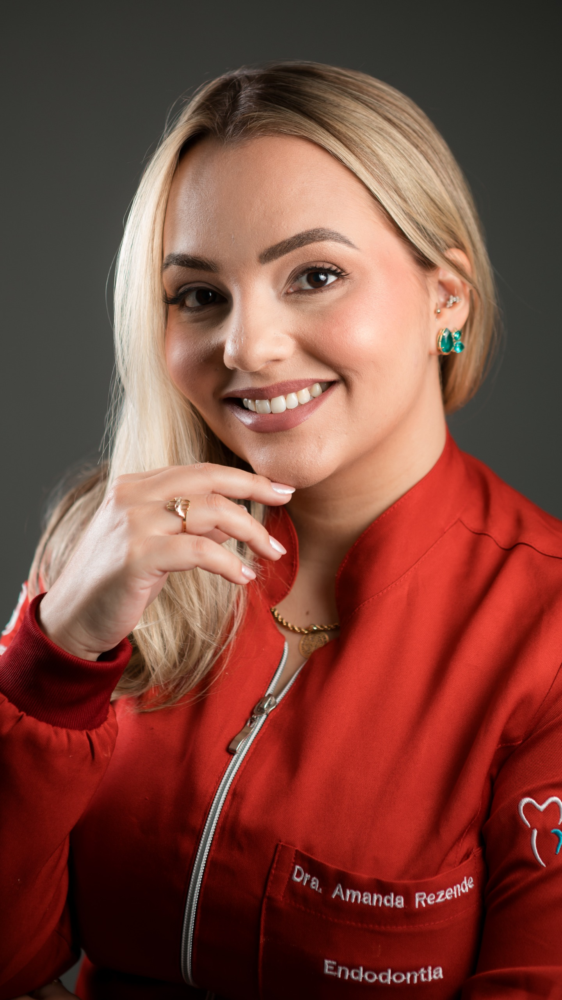
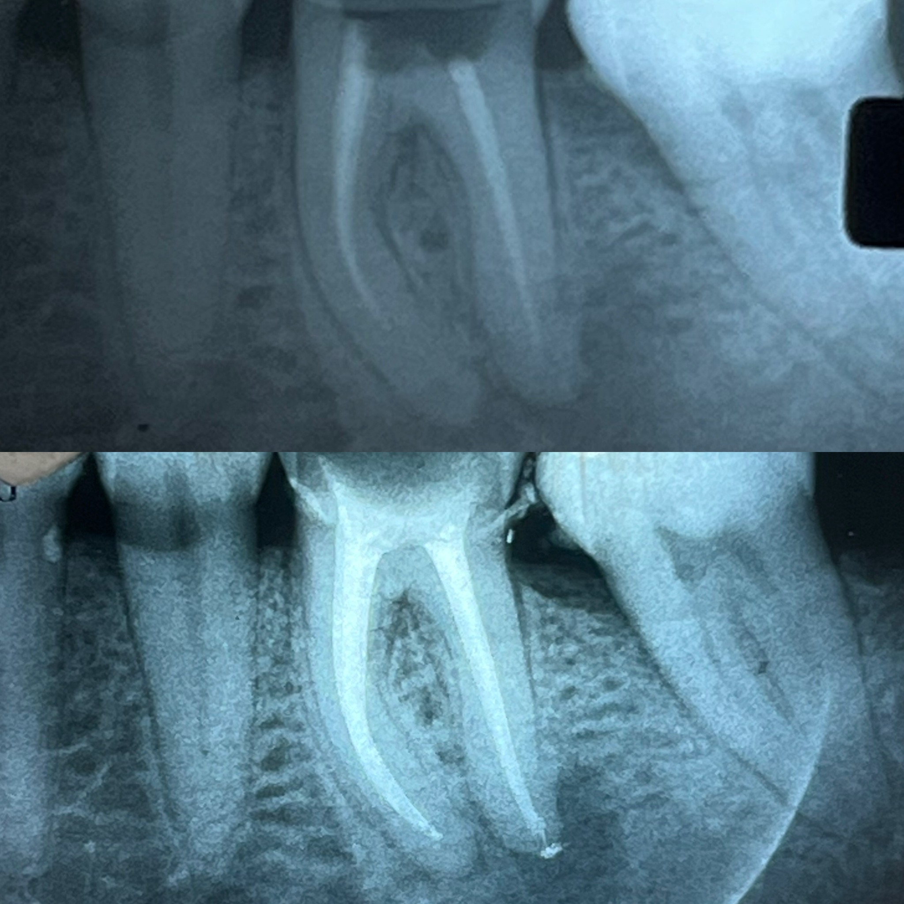

PARA PACIENTES
Preciso de atendimento em Endodontia
Entenda o tratamento, conheça meu trabalho e agende uma avaliação pelo WhatsApp.
Conhecer o atendimento →Tratamentos endodônticos realizados com planejamento, tecnologia e acolhimento — para preservar o seu dente sempre que possível.
Agendar atendimento →Conhecer meu trabalho
Entenda o tratamento, conheça meu trabalho e agende uma avaliação pelo WhatsApp.
Conhecer o atendimento →Você indica e eu vou até o seu consultório, levando meus equipamentos e materiais.
Conhecer a parceria →Cada caso é avaliado individualmente, com recursos e técnicas voltados para um tratamento seguro, preciso e confortável.
Indicado quando a polpa do dente está comprometida, buscando eliminar a infecção e preservar a estrutura dentária.
Reavaliação e novo tratamento de dentes que já passaram por Endodontia e precisam de uma nova abordagem.
Quando o caso permite, o tratamento pode ser planejado para ser concluído em uma única sessão.
Sou Cirurgiã-Dentista, formada pela Universidade de Taubaté (UNITAU) em 2016, e especialista em Endodontia pelo Instituto Sales, em São José dos Campos, onde concluí minha especialização em 2026.
Atuo há 2 anos exclusivamente como Endodontista. Antes de me dedicar à Endodontia, construí minha experiência como clínico geral e também atuei por 4 anos como dentista no SUS.
Essa trajetória me permitiu desenvolver um olhar amplo sobre o paciente e, hoje, direcionar essa experiência para uma área pela qual tenho especial dedicação: a Endodontia.
Uma seleção de tratamentos realizados com planejamento individualizado e acompanhamento radiográfico.

Retratamento endodôntico com remoção da obturação pré-existente, novo preparo químico-mecânico e obturação dos canais radiculares.
Uma parceria pensada para que você ofereça Endodontia especializada ao seu paciente sem precisar encaminhá-lo para outro consultório. O atendimento é realizado na sua clínica, com meus próprios equipamentos e materiais.
Vou até a clínica onde o paciente já é atendido e realizo o procedimento endodôntico no seu consultório. Assim, você mantém o vínculo com o paciente e amplia os serviços oferecidos pela sua clínica.
Levo meus equipamentos e materiais para a realização do atendimento, incluindo motor endodôntico, localizador foraminal e magnificação, conforme a necessidade do caso.
Você realiza a indicação e alinhamos o melhor horário. Eu vou até o seu consultório, realizo o tratamento endodôntico e, ao final, envio as informações do procedimento e orientações para a continuidade do atendimento restaurador.
Quero ser um consultório parceiro →Entender o tratamento ajuda a diminuir a ansiedade e tomar decisões com mais segurança. Cada caso é avaliado individualmente.
Dor espontânea ou persistente, sensibilidade prolongada ao quente ou frio, dor ao mastigar, trauma ou alterações observadas em exames podem indicar a necessidade de avaliação endodôntica.
O objetivo é remover o tecido pulpar comprometido, realizar a limpeza e desinfecção dos canais e, depois, preenchê-los adequadamente para ajudar a controlar a infecção e preservar o dente.
O procedimento é realizado com anestesia local e medidas de controle da dor. O desconforto pode variar de acordo com a condição do dente e com cada paciente, mas o objetivo é proporcionar um atendimento seguro e confortável.
O número de sessões depende do diagnóstico, da anatomia do dente, da presença de infecção e da complexidade do caso. Quando indicado, alguns tratamentos podem ser concluídos em uma única sessão.
Depois da Endodontia, o dente precisa receber a restauração definitiva adequada. Essa etapa é importante para proteger a estrutura dental e devolver função ao dente.
O Endodontista é o profissional especializado no diagnóstico e tratamento das alterações da polpa e dos tecidos ao redor das raízes. A avaliação especializada pode ajudar a definir a melhor conduta para cada caso.
Sim. Algumas alterações pulpares e periapicais podem evoluir com poucos sintomas ou até sem dor. Por isso, exames clínicos e radiográficos são importantes para o diagnóstico.
Não. Dor de origem dentária pode ter diferentes causas. O diagnóstico depende da avaliação clínica, dos testes e dos exames de imagem.
A necessidade de proteção depende da quantidade de estrutura dental remanescente e do tipo de dente. A restauração definitiva deve ser planejada de acordo com cada caso.
Alguns relatos de pacientes que confiaram no meu atendimento.
“Excelente profissional! Cuidadosa e atenciosa tanto durante o atendimento, quanto para explicar todo o processo!”
“Profissional incrível! Extremamente cuidadosa, delicada e competente. Transmite muita segurança e faz tudo com excelência. Sem dúvidas, uma das melhores endodontistas. Recomendo de olhos fechados!”
“Amanda é uma dentista excelente!! O tratamento impecável do começo ao fim! Muito humana e habilidosa! Recomendo tanto pra tratamento de canal quanto pra qualquer outro!!”
“Dentista super competente, atenciosa e explica perfeitamente o procedimento a ser realizado, indico com certeza seu excelente trabalho.”
“Amanda tem um atendimento muito humanizado. Já realizei alguns procedimentos e consultas e é sempre um cuidado impecável com o paciente. Profissional ética e especialista no que faz. Além da técnica, ela explica cada etapa do tratamento com clareza, o que me deixa muito seguro em todas as etapas. Tem mãos de fada. Recomendo de olhos fechados!”
“Simplesmente o melhor local que já pisei para fazer limpeza e um canal. Fiz um canal em outro lugar que acabou dando problema, a Dra refez e deu tudo certo! Mãos de fada indico mt.”
“Excelente profissional! Trabalho impecável, sempre com muito cuidado, dedicação e atenção aos pacientes. Recomendo demais!”
Entre em contato para saber sobre disponibilidade, atendimento e encaminhamentos em Endodontia.